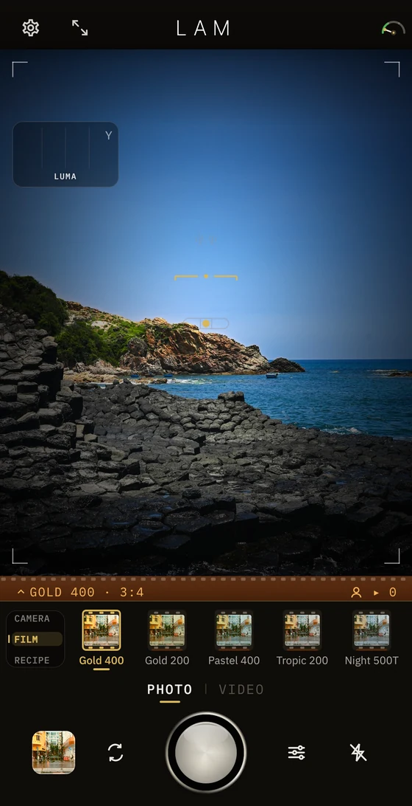
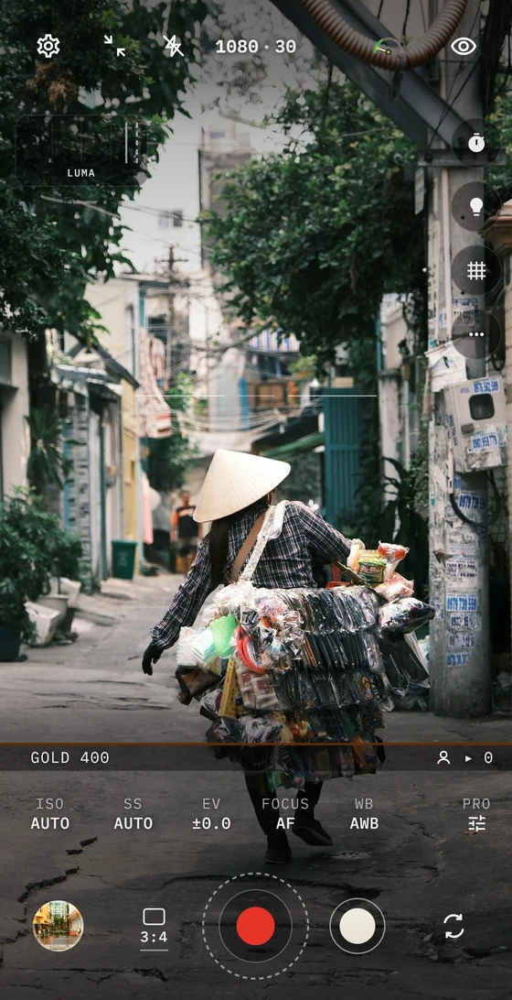
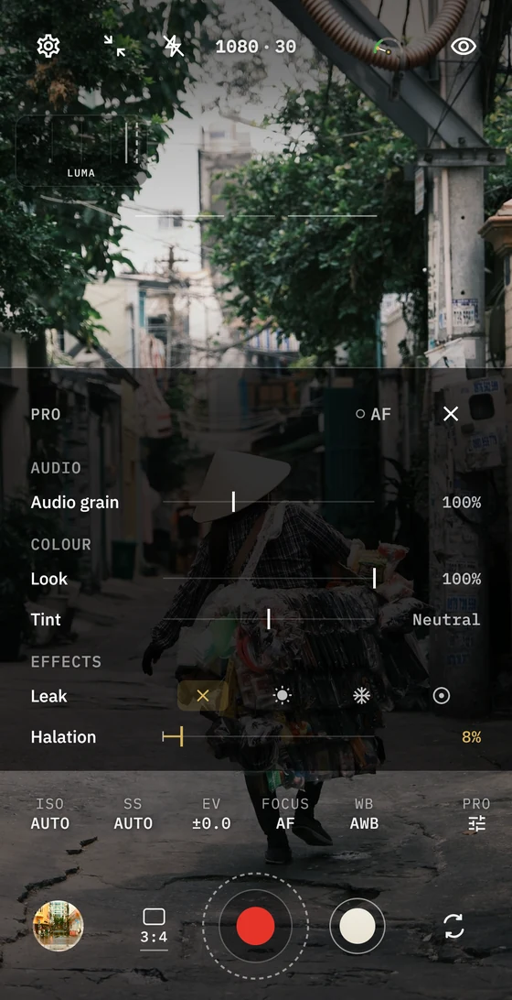

Camera Body vs. Film Stock vs. Recipe
New to analog photography? LAM separates the physical camera from the film loaded inside it — just like real 35mm, medium-format, and instant cameras.
1 · Hardware Layer
Camera Body
The physical machine in your hands (e.g. LAM Classic, Pocket Instant, Half Frame, 16mm Cine, Photobooth).
CONTROLS: Aspect ratio · Paper/film border · Optical corner vignette · Shutter feel & sound · Roll length (10–72 shots).
2 · Emulsion Layer
Film Stock
The roll of film loaded inside the body (e.g. Gold 400, Cinema 800T, Portia 160, Silver 400).
CONTROLS: Colour chemistry · Contrast curve · Mid-tone silver grain · Warm halation glow around bright lights.
3 · Preset Layer
Recipe (8-Char Code)
A saved creative combination (e.g. Hoi An Lanterns or your own custom dial settings).
BUNDLES: Film Stock + Grain strength + Halation + True Skin mode + White Balance into an 8-character text code.
Tip: Picking a Camera Body loads its era-matched default film automatically, but you can freely load any of the 31 film stocks into any body (for example, loading black-and-white
Silver 400 inside Pocket Instant). Try it live in the Web Simulator →Boutique Instrument vs. Full-Screen Pro HUD
Switch layouts at any time without interrupting the live camera stream — the viewfinder stays warm and active across transitions.



- All manual & monitoring tools are Free: Manual ISO, Shutter Speed (including photo shutter
1/4000–1/8 sand Boutique SS/WB controls 1.0.7), White Balance (Kelvin/presets), Exposure Compensation, AF/AE Lock, Focus Peaking, Zebras, False Colour, and live Histogram require no purchase. - Layout Switch & 48 dp Tier Menu 1.0.7: Switch between Boutique and Full-Screen (and Simple vs Advanced control density) in Settings › Display, or tap the Camera / Film / Recipe rail to open full-height 48 dp selection rows with quick Create and No recipe actions.
- 180° AUTO Cinema Shutter: Locks a natural motion-blur shutter angle and automatically picks a flicker-free speed for indoor mains power in your country (
1/50 son 50 Hz grids,1/40 son 60 Hz grids at 24 fps). - Built-in Teleprompter: Open the prompter in Video mode to scroll your script right next to the lens — including horizontal mirror flip for beam-splitter glass rigs.
Film Roll Mode, Push/Pull, Half-Frame & Photobooth
- Film Roll Mode & Light-Table Contact Sheet: Turn on Roll Mode to count down real exposures (
36on 35mm,72on Half-Frame,27on Disposable,12on 6×6 Twin Lens,10on Instant). Inspect in-progress and finished rolls on the Light Table in Gallery → Rolls, hold any frame to inspect silver grain under the Contact-Sheet Loupe 1.0.7, or export a 9:16 roll video. - Roll Push / Pull (−1 to +2 stops) 1.0.7: Rate any roll-developed film one stop slower (
−1pull: softer contrast, lifted shadows, finer grain) or one to two stops faster (+1/+2push: steeper contrast, denser shadows, bolder grain) for free — without underexposing the phone sensor. - Half Frame (Diptych): Captures two vertical shots in sequence and prints them side-by-side onto a single 35mm frame separated by a film rebate line.
- Photobooth (Free Body) 1.0.7: Fires a 4-shot curtain countdown on four strip papers (Cream, Film, Pastel, and Season) and exports both a vertical 4-photo strip and a 9:16 Animated Strip video.
Second Take, LAM Lab, Quick sort & Persistent EXIF
Review, re-develop, and cull a 36-exposure roll with one thumb after a shoot (items marked 1.0.7 arrive with the 1.0.7 update):
| Feature | How it works in LAM Gallery |
|---|---|
| Second Take, Save Original & Keep Negatives | LAM keeps an untouched local original of your last 500 photos on-device so you can re-develop onto another Film Stock non-destructively or export the ungraded frame for free with Save Original. Optionally enable Keep Negatives in Settings to retain the 12 most recent sensor DNGs. |
| LAM Lab (Library Develop) 1.0.7 | Import any existing photo from your phone’s library and develop it through the camera’s currently loaded Film Stock, True Skin mode, and Recipe — 100% on-device. |
| Quick sort (Swipe Culling) 1.0.7 | Toggle Quick sort in the photo viewer: Swipe down to Mark favorite, Swipe up to Queue for trash (staged safely in Trash queue until you review and confirm permanent deletion), tap Keep to pass, with full Undo / Redo. |
Persistent ⓘ EXIF Panel 1.0.7 | Tap ⓘ once to inspect Body / Lens, Film Stock, Push/Pull EI, Recipe code, Exposure (ISO, shutter, aperture), Resolution, File size, and Filename — the panel stays open as you swipe horizontally across shots. |
| Grid options (3 / 4 / 5 columns) 1.0.7 | Open Grid options (or pinch) to switch between 3, 4, or 5 columns and toggle Show favorite badge / Show film badge on thumbnails. |
| Body, Film & Date range Filters 1.0.7 | Combine filters by Film Stock, Camera Body (Saigon, CCD Digicam, 16mm Cine…), Favorites, and Date range (Today, Last 7 days, Last 30 days, or Custom range). |
Zero Cloud Uploads, Share Frames & Strip Location
- 100% On-Device Grading & True Skin: Every film shader and Google MediaPipe per-person skin mask runs locally in phone memory for a fraction of a second and is immediately discarded.
- Strip location when sharing 1.0.7: In the Share sheet, turn on Strip location when sharing to remove GPS coordinates from clean copies of photos, videos, and multi-item batches before sending or posting.
- Postal & Camera Share Frames 1.0.7: Frame any shot in your active Boutique leather, a perforated Stamp, or a regional Postcard with an optional place caption.
.cube LUT Import/Export, Steal the Look & Recipe Codes
- 8-Character Recipe Codes: Every custom look compiles into an 8-character checksummed code. Paste a friend’s code in the Recipe Store to apply the exact stock, grain, halation, and skin setting — no account needed.
- 17³
.cubeLUT Export & Import (Pro): Export any LAM grade as a standard.cubefile for DaVinci Resolve, Premiere Pro, or Final Cut Pro — or import your own studio.cubeLUT (up to 1 MB, safety-guarded) straight into the live viewfinder. - Steal the Look (Pro): Pick any reference photo from your library and LAM matches it to the closest analog film stock on-device.
Free, Pro & Independent One-Time Packs
- Free Forever ($0): 7 Camera Bodies (LAM Classic, Disposable, CCD Digicam, Saigon, Toy Camera, Pocket Instant, Photobooth), 11 Film Stocks, 7 Recipes, Roll Push/Pull, all 5 True Skin modes, all 7 camera themes, all manual controls & HUD scopes, ND filter, 28 in-app languages 1.0.7, and video clips up to 3 minutes.
- LAM Pro ($19.99 once): Unlocks all 17 Camera Bodies, all 31 Film Stocks, every Recipe outside the add-on packs, Straight (ungraded capture),
.cubeLUT import/export, Steal the Look, all 4 Pro leather skins, no LAM mark on photos, and clips longer than 3 minutes. - Lens Pack ($4.99 once) 1.0.7: 8 screw-on optical filters (Star, Black Mist 1/4 & 1/8, Anamorphic Blue & Amber, Prism FX, Soft Diffusion, Fisheye) — with Black Mist & Anamorphic running live in video as well as stills. Independent of Pro.
- Food Pack ($4.99 once) 1.0.7: Restaurant Tungsten WB Lock, 3×3 overhead level grid, slow motion, 7 culinary recipes, dish Review Cards (name, place, price, stars), and 9:16 Meal Rolls with menu videos. Independent of Pro.
- Concert Pack ($4.99 once) 1.0.7: One-tap Stage Mode (spotlight exposure held at
−1.5 EV+ 4 stage looks), 10s Backtrack pre-roll, Solo Follow (Android & 8 GB iPhones), 5-colour Cheer Board, per-show Concert Roll, and Ticket share frame (Stage video is off by default in Japan & Taiwan where venues restrict filming). Independent of Pro; never a subscription. - Restoring Purchases: Open Settings → Restore Purchases while signed into the same Apple Account or Google Play account. Need help? Visit Help & Complaints.